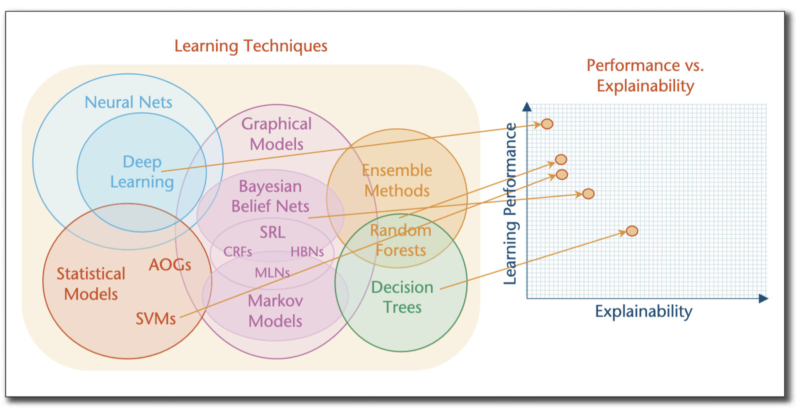
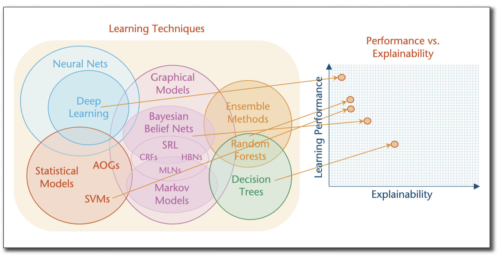

Deep Learning

Figure 1: Learning Performance vs Expalinability Trade-Off of Learning Techniques [Source: 2018 AAAI Symposium (pg. 48) : DARPA's Explainable Artificial Intelligence Program]
Date:

Figure 1: Learning Performance vs Expalinability Trade-Off of Learning Techniques [Source: 2018 AAAI Symposium (pg. 48) : DARPA's Explainable Artificial Intelligence Program]